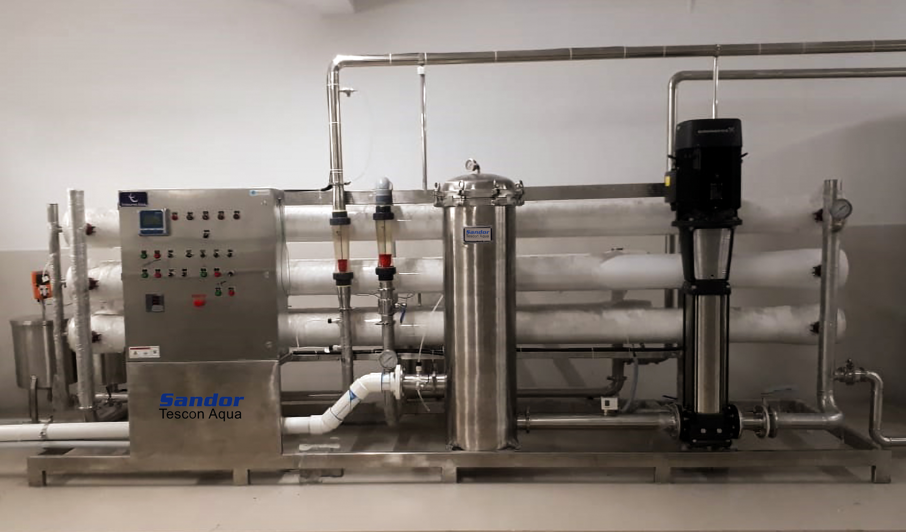

Integrated water treatment solutions designed for packaged drinking water production, including filtration, purification, RO, disinfection, storage and process support systems.

Packaged drinking water production requires appropriate water treatment processes to achieve the desired water quality before filling and packaging.
Sandor Tescon Aqua provides water treatment solutions that can be configured according to source water quality, required production capacity, treatment objectives and site conditions.
Depending on the application, treatment systems can incorporate filtration, reverse osmosis, UV or ozone-based disinfection, treated water storage and other supporting processes.
Treatment systems can be developed around source water characteristics, production requirements, treatment capacity and the intended packaged drinking water application.
A packaged drinking water plant can include multiple treatment stages selected according to raw water quality and production requirements.
Filtration systems can be used as pre-treatment to reduce suspended particles and prepare water for downstream treatment processes.
RO systems can be integrated where dissolved solids reduction and purified water are required for the treatment process.
UV-based disinfection can be integrated into suitable water treatment systems where microbial control is required.
Ozone treatment can be incorporated into suitable drinking water treatment applications as part of the disinfection process.
Treated water storage systems can be incorporated to support continuous plant operation and downstream production requirements.
Pumps, control systems and associated process equipment can be configured according to the plant design and operating requirements.
The treatment configuration for a packaged drinking water plant depends on the source water, required capacity, water quality objectives and overall plant requirements.
Treatment processes designed to improve source water quality for packaged drinking water production.
Filtration stages can be selected according to raw water quality and treatment requirements.
UV and ozone-based technologies can be integrated where disinfection is required.
Multiple treatment technologies can be combined according to specific project requirements.
Reverse osmosis systems for applications requiring reduction of dissolved solids and purified water.
Water filtration systems for pre-treatment and improvement of water quality before downstream processes.
UV-based systems for suitable applications requiring microbial control in treated water.
Ozone-based treatment can be integrated into suitable packaged drinking water treatment processes.
Treated water storage solutions to support continuous operation and downstream packaged water production.
Multiple treatment and process systems can be configured into an integrated plant solution.
We consider the source water, treatment objectives, capacity and application when developing a suitable packaged drinking water treatment configuration.
Understand the raw water source, characteristics and intended application.
Review water quality, required capacity and treatment objectives.
Identify suitable filtration, purification and disinfection stages.
Develop an integrated treatment solution based on the project requirements.
Share your raw water source, required capacity and treatment requirements with us. Our team can help identify a suitable water treatment approach for your packaged drinking water project.
Discuss Your Requirement